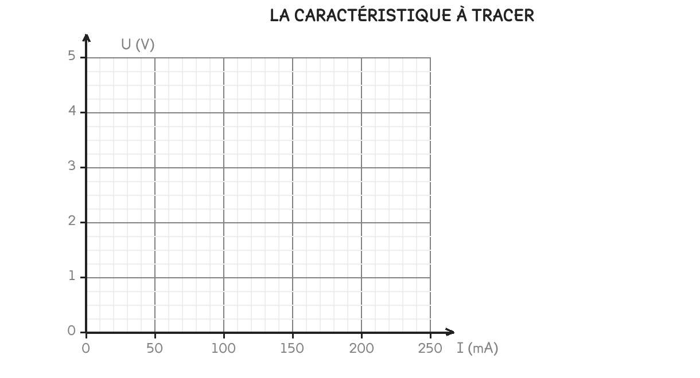

CAP Électricien · 1re année
Cinq mesures, des points alignés qui passent par zéro, et un quotient toujours égal : c'est la résistance.
2 exercices · 3 items d'entraînement · 2 figures
Savoirs travaillés
Une résistance sur une alimentation réglable, la tension qui monte pas à pas :
| U (V) | 0 | 1 | 2 | 3 | 4 |
|---|---|---|---|---|---|
| I (mA) | 0 | 50 | 100 | 150 | 200 |
Les points sont alignés et la droite passe par l’origine. C’est la signature de la proportionnalité : à zéro volt, zéro milliampère.

Une fois les cinq points placés, ils sont alignés et la droite passe par zéro : pas de tension, pas de courant. C’est la signature d’une situation proportionnelle, celle qu’on a travaillée sur les prix.
Série · AA
Exercice · AA
Sur la même droite, quelle tension correspond à un courant de 75 mA ?
Le quotient U ÷ I se calcule ligne par ligne. Il donne à chaque fois la même valeur, et cette valeur est la résistance du composant — celle que l’ohmmètre affiche directement quand on le branche aux bornes.
La division se fait en ampères, jamais en milliampères. 4 ÷ 200 ne donne rien d’utile ; 4 ÷ 0,2 donne les 20 Ω attendus. La conversion vient avant le calcul.
Les courants, écrits en ampères : 0,05 — 0,1 — 0,15 — 0,2.
Exercice · CN
Calculez U ÷ I sur la colonne de 2 V, avec l’intensité en ampères.
Diviser des volts par des milliampères. Le quotient ne vaut alors plus 20 mais 0,02 : la résistance se calcule en ampères, jamais en milliampères.
U ÷ I = R, la résistance, en ohms (Ω). C’est le coefficient du tableau de proportionnalité, et il ne dépend pas de la tension appliquée.
Doubler la tension double le courant, tant que c’est une résistance. Le quotient, lui, ne bouge pas : c’est ce qui caractérise le composant.
Ce site rappelle la méthode. Aucun corrigé, rien n'est noté.